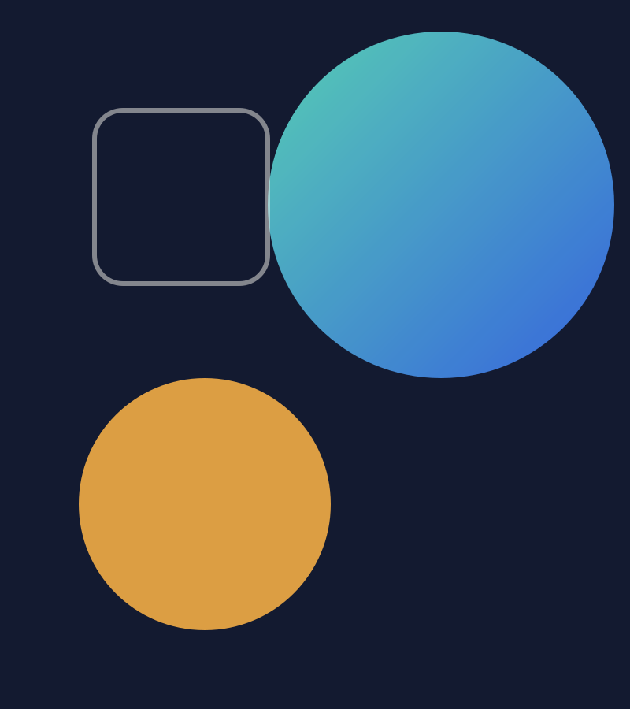

Conference name · 2026
The title of your talk
One line that says what the audience gets out of it
Conference name · 2026
One line that says what the audience gets out of it

Key terms
How it happened
What changed
The sentence the slide is for
Context
Keep slides sparse — you are the presentation, the slide is the backdrop.
The problem
Would that be fair?
Start with one honest metric.
Remove the step people skip.
Put it where everyone sees it.
The quote
A sentence worth remembering, in the speaker's language.— Who said it
What it means
The quote in plain words — one or two lines.
What impresses me
Questions?
Sources: the book, page 48 · example.com